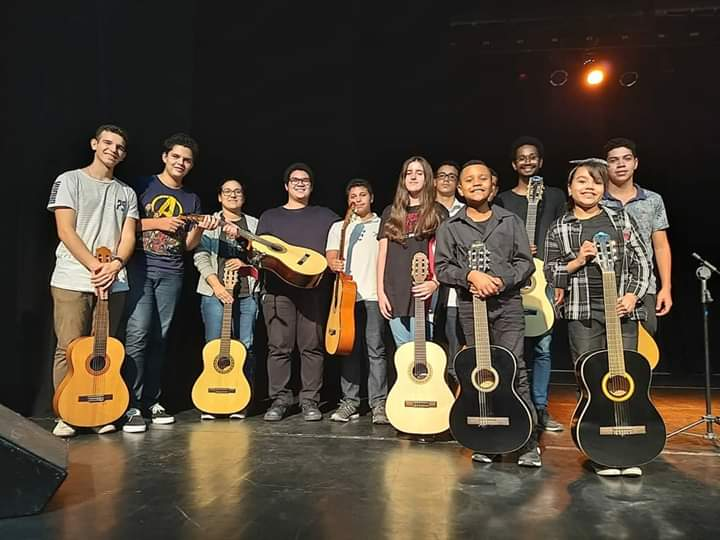

Comecei a fazer aulas de violão aos 12 anos, em fevereiro de 2017. Onde comecei a ter meu primeiro contato
com a música. O violão foi meu primeiro instrumento, a primeira música que aprendi foi "Asa Branca". primeiro
aprendi as notas do solo e depois comecei a aprender os acordes. Desde então, meu interesse por música só
aumentou. Acabei entrando na Camerata de Violões da Praia Grande, onde tive a oportunidade de me apresentar
várias vezes com o grupo e duas sozinha. Continuei fazendo aulas até 2020, depois parei. Foi nesse ano, de 2017,
que tive meu primeiro contato com partituras, o que eu tinha muita dificuldade no começo.
Em 2018, quando eu tinha 14 anos mais ou menos, me surgiu o interesse de aprender algum outro instrumento de
cordas. E então o escolhido foi o ukulele. Por ja ter visto alguns vídeos na internet, não tinha muita noção
do quão fácil seria tocar, mas eu imaginava que poderia observar pessoas tocando e tentar aprender sozinha.
E assim foi, comecei a pegar vários vídeos no Youtube, no qual eu observava as pessoas e pegava os acordes.
Foi um pouco mais fácil por eu já ter a familiaridade com o violão.
2018 e 2019 foi um ano mais focado em apresentações de violão e nas duas apresentações sozinha que fiz,
onde em uma toquei a música "Noturno" do Ernesto Marangoni e na segunda toquei A "Lagrima" de Francisco
Tárrega. E nesse ano me familiarizei mais com a leitura de partituras, mesmo ainda não estando 100% boa nisso.
Já no final de 2019, também me surgiu o interesse de apostar em uma coisa mais clássica e um tanto quanto,
dificil (?). Comecei a querer tocar violino, então em abril de 2020 comecei meus estudos sozinha mesmo,
devido a impossibilidade de sair de casa, e também porque achei que poderia aprender assim como o ukulele.
Foi um pouquinho complicado por conta de alguns vícios que eu criei e por não ter alguem ali para orientar.
Mas com muita prática e estudo, continuei tentando. Também em 2020, ganhei uma flautinha doce, sim, aquelas
que você pode dar a sorte de ganhar em uma festa de criança. Como ela é mais "fácil", levei mais como uma
recreação e achei que seria legal por ser um instrumento de sopro.

Em 2021, quando estava no meu último ano da escola, tive a oportunidade de enviar uma audição (tocando violão),
para a Universidade Estadual Paulista (UNESP), no qual toquei a música "Maria". Ainda em 2021, cheguei a fazer
algumas aulas online de violino, que contribuiram para tirar alguns dos vícios que eu peguei aprendendo sozinha
(como a movimentação do braço, o som e o ajuste do instrumento). E a partir das aulas, comecei a estudar o
método Suzuki (para violino). Mas acabei não dando continuidade às aulas, e só continuei estudando os métodos
sozinha.
Em 2022, comecei a estudar baixo elétrico pelo Youtube, o que também me despertou o interesse por entender
como funcionavam equipamentos de estúdio, sons e etc. Foi ai que também percebi que eu gostava de cantar
fazendo segunda voz.
E em 2023, adiquiri uma viola de arco, que é bem parecida com o violino, mas uma oitava a baixo. A técnica
do instrumento em si, não foi difícil de pegar pois é bem parecida com o violino. Mas no começo me confundi
um pouco devido a sua última corda "dó", mas foi através disso que aperfeiçoei minha leitura de partituras
e aprendi a ler a clave de fá, que até então ainda não sabia ler 100%. Nesse ano também tive a oportunidade
de me apresentar tocando violino e baixo pela primeira vez. A apresentação de baixo contou com algumas músicas
famosas brasileiras: Anna Júlia (Los Hermanos), Meu erro (Paralamas do Sucesso), Tempo Perdido e etc. Já o
violino foi uma coisa mais simples, apenas um improviso de Dust in the Wind (Kansas) e We Will Rock You (Queen).